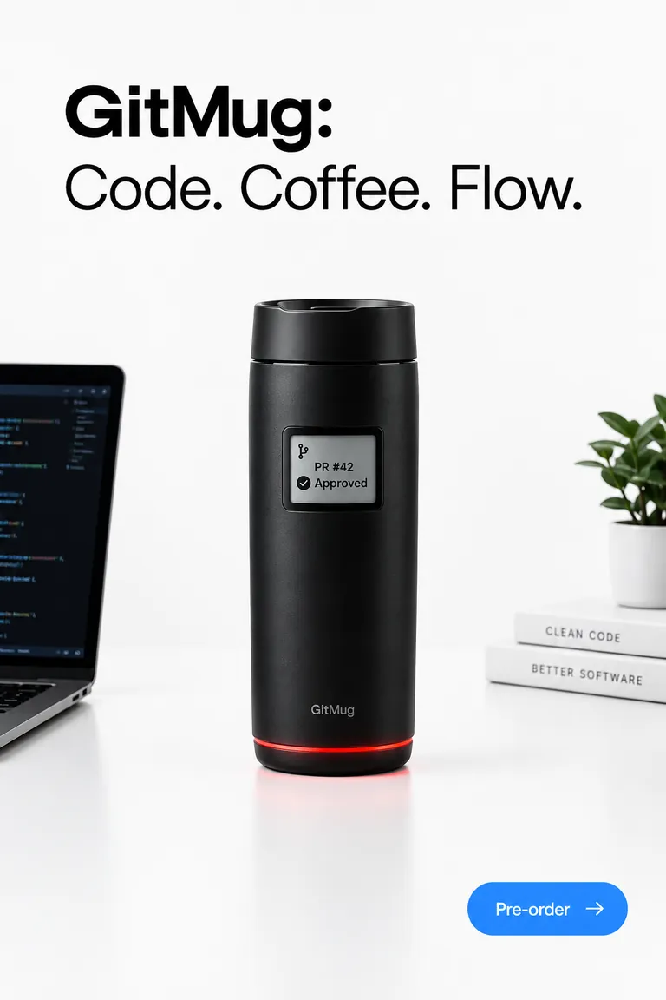

// 02 — visor 3d
Inspecciónalo desde todos los ángulos.
Gemelo digital del GitMug v0.9, renderizado en tu navegador. Orbítalo con el ratón o el dedo y simula un fallo del pipeline para ver cómo responde el anillo LED.
led: verde · pipeline passing
arrastra para orbitar
cargando modelo…

Tu navegador no pudo cargar el visor 3D. Aquí tienes la foto del producto.
modelo interactivo / webgl